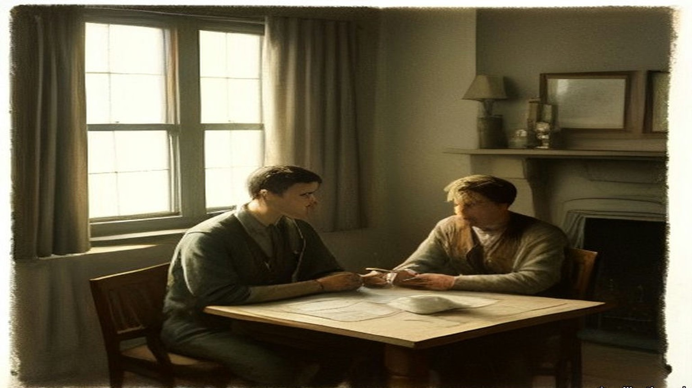
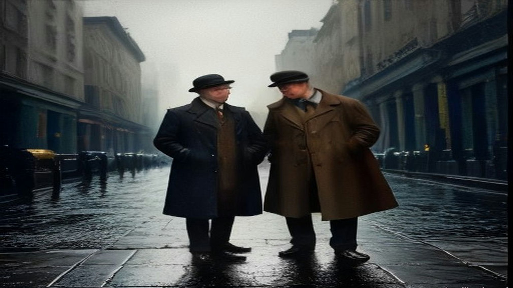
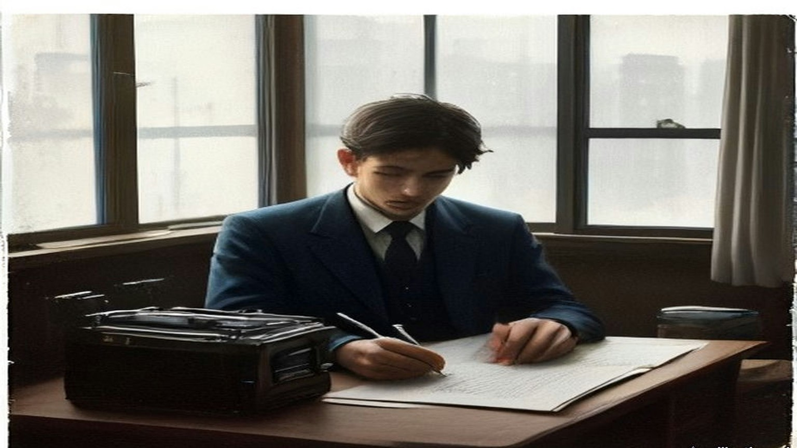
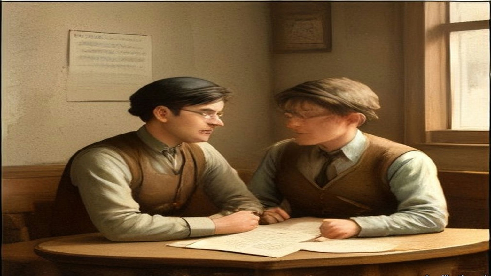
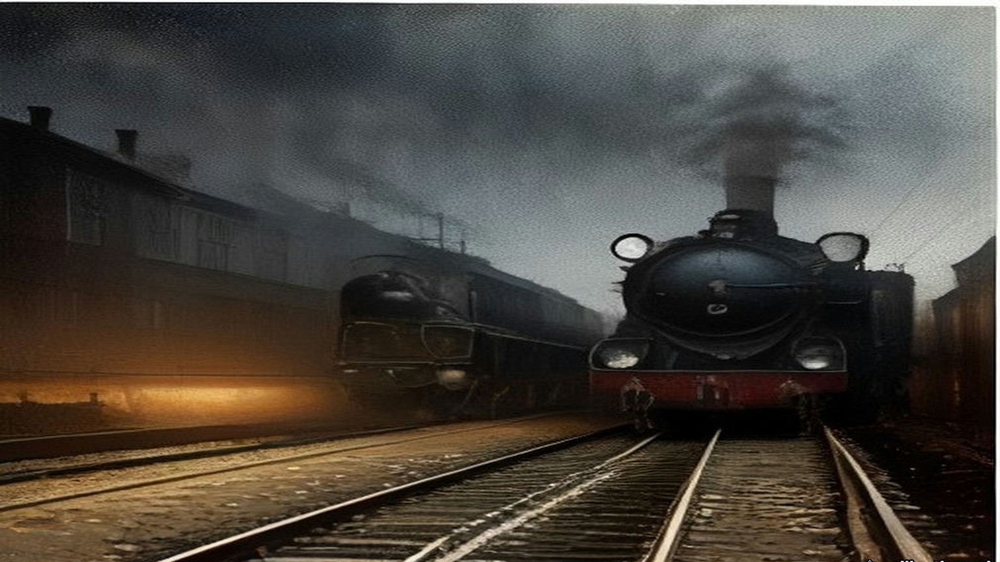
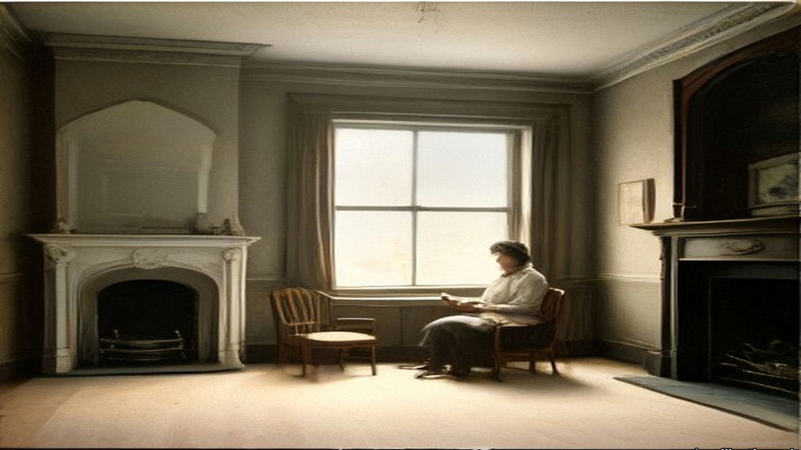
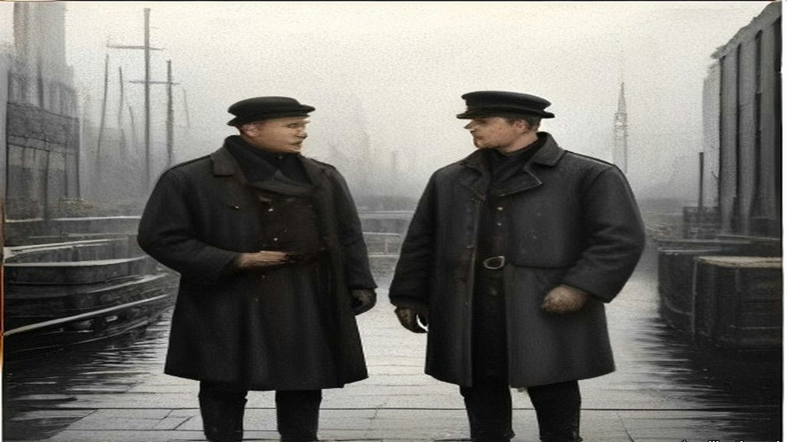

Chapter 20
Two Letters for Craig, 1921–1922
10 Downing Street, 22 Hans Place, and the Council Chamber of University College, Dublin, December 1921 to September 1922
10 Downing Street, Monday, 5 December 1921, three o'clock
Robert Barton kept notes. He was the Minister for Economic Affairs in the Dáil cabinet and one of five plenipotentiaries sent to London in October, and on the afternoon of Monday, 5 December, he was one of three of them at the table in Downing Street. Arthur Griffith sat for the delegation as its chairman. Michael Collins sat beside him. Across the table were four men: the Prime Minister, David Lloyd George; Austen Chamberlain; Lord Birkenhead, the Lord Chancellor; and Winston Churchill. Eamonn Duggan and George Gavan Duffy were not there. They waited at the delegation's house at 22 Hans Place, in Knightsbridge.
The conference had broken down the day before, on the Sunday. An intermediary had put the two sides back in touch on the Monday morning. At three o'clock Lloyd George opened by saying that he must know once and for all exactly where the Irish stood on the Ulster proposals. The proposals in the document on the table, he said, were exactly those Griffith had agreed to, and on which Griffith had undertaken not to let him down.
Griffith said he had not let him down and did not intend to. But before he gave a decision on the earlier articles he must have a reply from Sir James Craig, the Prime Minister of Northern Ireland, accepting or refusing the unity of Ireland. Chamberlain and Lloyd George called that "inadmissible, unreasonable and contrary to the undertaking." Chamberlain said that his colleagues and he had trusted that undertaking when they took the line they did at the Liverpool meeting, and had staked their political future on it.
Then Collins spoke. To agree to any conditions for the future relations of the two countries before Craig assented to Irish unity was impossible, he said, and Barton took down his reason: "that to do so would be to surrender our whole fighting position." Every document the Irish had ever sent made association with the Commonwealth conditional on unity. If Craig refused, they would have given up their position and not even secured the one thing it was meant to buy.
Barton wrote down what happened next in a single line. "LLOYD GEORGE got excited." He shook his papers in the air. He said the Irish were trying deliberately to bring about a break on Ulster because their people at home had refused to come within the Empire, and that Griffith was letting him down where he had promised not to. He took a paper out of an envelope. He said he had shown it to Griffith at a house in London and that Griffith had agreed to its contents. He called it a letter. Barton could remember no letter on the subject except the one Griffith had written to Lloyd George on 2 November, after consulting the rest of the delegation, and he looked across at Collins and saw that Collins could not place it either. The paper came over the table. It was a memorandum, not a letter. If Ulster would not come into a Parliament for all Ireland, it said, she could stay out, "In this case, however, it would be necessary to revise the boundary of Northern Ireland. This might be done by a Boundary Commission which would be directed to adjust the line both by inclusion and exclusion so as to make the Boundary conform as closely as possible to the wishes of the population."
Griffith said he stood by his undertaking. He still thought it not unreasonable that Craig should reply first. Lloyd George said that to ask for Craig's reply before accepting or refusing was itself letting him down, because the only alternative to Craig's acceptance was the Boundary Commission, and his Government would carry the Commission into effect "with strict fidelity." Before the British withdrew to talk among themselves he wanted the Irish objections. The first three Clauses, he said, were absolutely essential. There could be no discussion about them.
The rest of the afternoon went clause by clause. Birkenhead produced a form of oath that Collins had handed him that morning, with Birkenhead's own alterations written in. The Irish objected to its last words, "British Empire," and asked for "British Commonwealth of Nations." Clause 5 was the money. It said the Irish Free State "shall contribute" towards the public debt of the United Kingdom and the war pensions. The Irish wanted the words "if any" put in after "such sums," and in other places, so that the sum owed could be nothing. Chamberlain said these were matters of wording only.
Clause 6 took longer. It said the defence by sea of Great Britain and Ireland would be undertaken exclusively by British forces. Barton argued with Collins and Churchill over the word "exclusively" for a long time. It shut Ireland out of building a single vessel or preparing in any way to take over her own coastal defence, and nothing bound the British ever to hold the conference that was promised to review it in five years. Churchill said that if Ireland were allowed any navy it would be impossible to get the Treaty through Parliament. The English people would believe the Irish meant to build submarines or mine-layers to attack their food ships. The word "exclusively" came out, grudgingly. Barton then asked that Ireland be required to build one or more ships for her own coastal protection. That was refused outright, except for revenue and fishery protection. Churchill said that he would definitely oppose any provision for an Irish navy, and "would even oppose it five years hence if he had the opportunity."
When the British came back Churchill agreed to fix the review conference for a date five years off, and refused to touch the clause on facilities in time of war. He would not take Queenstown out of the Annex. Barton asked what "care and maintenance parties" meant in the forts. Churchill told him: gunners and trained men from the Royal Garrison Artillery and the Royal Engineers, "numbering 1,060 men and 69 officers or thereabouts." On trade, Lloyd George agreed provisionally to freedom on both sides to put on any tariffs either liked.
Then they went back to Ulster. Griffith said that he personally would sign whether Craig accepted or not. His colleagues were in a different position, he said, because they had never made the promise not to let Lloyd George down, and it was not fair to demand their answer before Craig replied. Barton watched him make repeated efforts to keep the question from being put to Collins and to Barton himself.
Lloyd George would not have it. He had always taken it that Griffith spoke for the delegation, he said. They were all plenipotentiaries. It was now a matter of peace or war and each of them must make up his mind. He required that every delegate should sign the document and recommend it, or there was no agreement. The British had hazarded their political future and the Irish must do the same. Then he spoke to Barton directly. "At one time he particularly addressed himself to me," Barton wrote, "and said very solemnly that those who were not for peace must take full responsibility for the war that would immediately follow refusal by any Delegate to sign the Articles of Agreement."
He had two letters ready. One was a covering letter to Craig with the British proposals, saying the Irish delegation had agreed to recommend them for acceptance by Dáil Éireann. The other said the delegation had failed to come to an agreement, and that he therefore had no proposals to send to Craig. One of them, he said, must go to Craig that night. He would have to have their agreement or refusal by ten o'clock. A special train and a destroyer were ready to carry one letter or the other to Belfast.
The Irish fought one more point before they left. The draft gave Craig twelve months to decide whether Northern Ireland came in. For twelve months, Barton argued, they would not know whether there was to be unity or not, and life could be made intolerable for their people in Ulster. Collins spoke of the recent seizure of the Tyrone County Council's books, and the support the Ulster Government had had from English troops. Lloyd George said that was a matter for the Northern Government under the Act of 1920. The British left the room again. The Irish decided on one month, rang for them to come back, and told them. Lloyd George said a month was ill advised. Craig was going to refuse the terms, he said, and he knew it for certain. But he accepted the change and said he would have the clauses redrafted. They were to come back at ten with their answer.
When Barton came to tell the Dáil about it a fortnight later, he said it was then about half-past eight.

* * *
22 Hans Place, Knightsbridge, the same evening
The two who had stayed behind at the house were waiting for them. Gavan Duffy later said what the three brought back through the door. After four and a half hours of discussion, "our delegates returned to us to inform us that four times they had all but broken and that the fate of Ireland must be decided that night."
Gavan Duffy gave the Dáil the ultimatum as it reached him in that room, in the words he carried away from it. "It must now be peace or war. My messenger goes to-night to Belfast. I have here two answers, one enclosing the Treaty, the other declaring a rupture, and, if it be a rupture, you shall have immediate war, and the only way to avert that immediate war is to bring me the undertaking to sign of every one of the plenipotentiaries, with a further undertaking to recommend the Treaty to Dáil Eireann and to bring me that by 10 o'clock. Take your choice."
The question in front of them was the one Barton put to the Dáil afterwards. They could stand behind their own proposals for external association, face war and maintain the Republic. Or they could accept inclusion in the British Empire and take peace.
Griffith was for acceptance. So was Collins, and so was Duggan. Barton and Gavan Duffy were for refusal, "war or no war." Barton had heard the words across the table and Gavan Duffy had heard them only at second hand, and both came to the same conclusion. An answer that was not unanimous meant immediate war. The responsibility for it would rest on the two who refused.
"For myself, I preferred war," Barton told the Dáil. "I told my colleagues so, but for the nation, without consultation, I dared not accept that responsibility." He had taken an oath to the Republic and still called it the most sacred bond on earth. In that room he judged breaking it to be the lesser of the two outrages in front of him. "So that I myself, and of my own choice, must commit my nation to immediate war, without you, Mr. President, or the Members of the Dáil, or the nation having an opportunity to examine the terms upon which war could be avoided."
"I shall not forget the anguish of that night," Gavan Duffy said, "torn as one was between conflicting duties." He knew the ultimatum could be bluff. "Again this ultimatum might have been bluff, but every one of those who had heard the British Prime Minister believed beyond all reasonable doubt that this time he was not play acting, and that he meant what he said."
The ten o'clock deadline passed with the five of them still in the house. Barton's notes put the discussion at Hans Place from nine o'clock until a quarter past eleven, and say only that "a decision was eventually reached to recommend the Treaty to the Dail."
Nine months later, after Griffith and Collins were both dead, W. T. Cosgrave told the Dáil two things Griffith had told him in London that summer. One was that Barton had said to Collins on the way to Downing Street, "I will never let you down, Mick." The other was that before he signed, Barton went out of the room to talk to his cousin, Erskine Childers, the delegation's secretary, came back in five minutes, and said that he would sign. Barton was not in the Dáil to answer it. His own account of the evening has no Childers in it.

* * *
10 Downing Street, 11.30 p.m. to 2.20 a.m.
Griffith, Collins and Barton were back in Downing Street at half-past eleven, and attacked the document again.
They tried to get Clause 3, the representative of the Crown, taken out altogether, and failed. They got the words "Governor-General" removed, with the choice of a title left to them. Chamberlain said that "President" was inadmissible. Collins demanded the removal of the word "local" in front of the Irish Free State's military defence force, and got it. Clause 14(e), on an Ulster army, came out on his demand, with its substance moved into the safeguards for Ulster.
On Clause 5 the British agreed to the verbal changes. Chamberlain would not have the "if anys." It was too late to quibble over such small points, he said. The clause as signed that night says that the Irish Free State "shall assume liability for the service of the Public Debt of the United Kingdom as existing at the date hereof and towards the payment of War Pensions as existing at that date in such proportion as may be fair and equitable, having regard to any just claim on the part of Ireland by way of set-off or counter-claim." The amount was to be settled, failing agreement, "by the arbitration of one or more independent persons being citizens of the British Empire." It held no "if any." The Irish counter-claim was there, and so was the debt.
Collins asked about the clauses that spoke of summoning the Parliament of Southern Ireland. Birkenhead wrote a memorandum on the spot. The functions in Clauses 15 and 17 were to be carried out by a Provisional Government of Southern Ireland, which would take over the government "immediately" on ratification.
Then Lloyd George asked whether they, as a delegation, were prepared to accept these Articles of Agreement and to stand by them in their Parliament as the British delegation would stand by them in theirs.
Barton wrote down Griffith's answer in full. It was two words. "We do."
While they waited for the clean copy they talked about the release of the prisoners and the procedure for ratification. The final draft was read over, agreed to and signed, and the Annex with it. The British signed as D. Lloyd George, Austen Chamberlain, Birkenhead, Winston S. Churchill, L. Worthington-Evans, Hamar Greenwood and Gordon Hewart. The Irish signed in Irish: Art Ó Griobhtha, Micheál Ó Coileain, Riobárd Bartún, E. S. Ó Dugain, Seórsa Ghabháin Uí Dhubhthaigh.
Duggan was not in Downing Street that night. He told the Dáil so. "I was not threatened by Lloyd George. He did not shake papers in my face. I signed the Treaty in the quiet seclusion of 22, Hans Place."
The British delegation lined up to shake hands and say good-bye. Barton noted the time. The conference ended at 2.20 a.m. on 6 December.
Article 10 was in the document they carried away. The Free State would pay fair compensation to judges, officials, police and other public servants discharged by it or retiring because of the change of government. "Provided that this agreement shall not apply to members of the Auxiliary Police Force or to persons recruited in Great Britain for the Royal Irish Constabulary during the two years next preceding the date hereof. The British Government will assume responsibility for such compensation or pensions as may be payable to any of these excepted persons."

* * *
Council Chamber, University College, Dublin, Monday, 19 December 1921
The Dáil met to deal with the Treaty in the Council Chamber of University College, Dublin, from 14 December. For the first days it sat in private session. On the morning of 19 December it sat in public, with the press in, and Griffith moved "That Dáil Eireann approves of the Treaty between Great Britain and Ireland, signed in London on December 6th, 1921."
Michael Collins was Minister for Finance. He listened to Griffith read a letter Lloyd George had written him on 13 December to settle "doubts" in Dublin. Part of it was about the money. "The second question is as to the scope of the Arbitration contemplated in Article V. regarding Ireland's liability for a share of War Pensions and the Public Debt," Lloyd George wrote. The British Government would submit its claim, and the Free State "should submit any counter-claim to which it thought Ireland entitled." The arbitrators' decision would be final and binding on both. They would be men "as to whose impartiality both the British Government and the Government of the Irish Free State are satisfied." At the end of the letter Lloyd George added a sentence of his own. "I may add that we propose to begin withdrawing the Military and Auxiliary Forces of the Crown in Southern Ireland when the Articles of Agreement are ratified."
The House rose at one o'clock so that de Valera could be installed as Chancellor of the National University, and came back at a quarter to four. Collins spoke first in the afternoon.
He spoke as one of the signatories. He did not recommend the Treaty for more than it was, he said, and he did not recommend it for less. "In my opinion it gives us freedom, not the ultimate freedom that all nations desire and develop to, but the freedom to achieve it." The House applauded. He talked about the bargain as a Minister for Finance. "Rightly or wrongly when you make a bargain you cannot alter it, you cannot go back and get sorry for it and say 'I ought to have made a better bargain.' Business cannot be done on those bases."
He said the Treaty was not signed under personal intimidation. If it had been tried, no member of the delegation would have signed. He told the Dáil what he took the long struggle to have been about. It had been a story of "slow, steady, economic encroach by England," he said, and the encroachment was still going on in front of them. "Every day our Banks become incorporated or allied to British interests, every day our Steamship Companies go into English hands, every day some other business concern in this city is taken over by an English concern and becomes a little oasis of English customs and manners."
He told them about the money from America. As things in London were coming to a close, he had received cablegrams. He knew what saying so would cost him over there, and he said it anyway. "I received a cablegram from San Francisco, saying, 'Stand fast, we will send you a million dollars a month.' Well, my reply to that is, 'Send us half-a-million and send us a thousand men fully equipped.'" Another came from a branch of the American Association for the Recognition of the Irish Republic: "Don't weaken now, stand with de Valera." He told the House to let that branch come over and stand with them both. He was not going on with the fight, he said, without referring it to the Irish people, "for the sake of propaganda in America."
He finished on the living. Deputies had asked whether the dead would approve, and the unborn, and few had asked whether the living approved. "Let us take that responsibility ourselves and let us in God's name abide by the decision."
Erskine Childers followed him, from the other side. He had been secretary to the delegation, and he told the House that the Irish counter-proposals had stood before the British government until the end, "except that last terrible hour." O'Higgins, the Assistant Minister for Local Government, quoted the ultimatum as he had it, in the Prime Minister's words. "The man who is against peace," said the English Premier in presenting his ultimatum, "must bear now and for ever the responsibility for terrible and immediate war."
It was late in the day when Barton rose, the last speaker before the adjournment. Collins had just told the House that no one had intimidated him. Barton said he would make plain the circumstances under which he found himself in honour bound to recommend the Treaty. He did not seek to shield himself from the charge of having broken his oath to the Republic. "My signature is proof of that fact." He told the House about Monday at three o'clock, about Griffith's efforts to refer the decision back to them, and about Lloyd George's answer, given "with all the solemnity and the power of conviction that he alone, of all men I met, can impart by word and gesture." The Prime Minister had declared, Barton said, "that the signature and recommendation of every member of our delegation was necessary or war would follow immediately."
He sat down to applause. Collins moved the adjournment until eleven the next morning.

* * *
Council Chamber, University College, Dublin, Wednesday, 4 January 1922
Margaret Pearse was the mother of Pádraig and Willie Pearse, both dead since 1916. Pádraig had been executed in Kilmainham. Since the debate began on 14 December, deputies on the Treaty side had said more than once that Pádraig Pearse would have taken this settlement, and she had sat in the room and heard it. On 4 January she followed Alasdair MacCabe of Sligo, who had told the House that he would take Dominion Home Rule or Repeal of the Union or anything else before a Central American Republic.
"I rise to support the motion of our President for the rejection of this Treaty," she said. Her first reason was her sons. "It has been said here on several occasions that Pádraig Pearse would have accepted this Treaty. I deny it. As his mother I deny it, and on his account I will not accept it. Neither would his brother Willie accept it, because his brother was part and parcel of him."
Her second reason was fear. She had said this already at the private meeting and now she said it in public. From 1916, she said, she had had comfortable, happy nights and happy days, "because I knew my boys had done right, and I knew I had done right in giving them freely for their country." Then the Black and Tans came to her house. "But when the Black-and-Tans came," she said. "Then no nights, no days of rest had I. Always we had to be on the alert." And the Tans were not the worst thing she could think of. "But even the Black-and-Tans alone would not frighten me as much as if I accepted that Treaty; because I feel in my heart," she said, and stopped herself to say she would not say it if she did not feel it, "that the ghosts of my sons would haunt me."
She told the House about a day in 1915 or 1916. Pádraig had sent her into the city on an urgent message. In Westmoreland Street she saw the placards: "Home Rule Bill Passed." She jumped off her tram, got into another, and went back up to Rathfarnham as fast as she could. He was writing, as he usually was. He asked her if she was back so quickly. She told him the Home Rule Bill was passed. The tears came into his eyes. He got up and put his arms round her. "Little mother, this is not the Home Rule Bill we want, but perhaps in a short time you will see what we intend to do and what freedom we intend to fight for." She had forgotten the errand. He told her he would do it himself tomorrow, and to go and get something to eat.
She came to the women of the country. She had been through Ireland in the past few years, she said, and had studied the wives of Ireland, and no one should say those women accepted the Treaty from their hearts. "They say it through fear; they say it through fear of the aeroplanes and all that has been said to them." And she came to the map. In the autumn of 1915 her son had inspected Volunteers at Vinegar Hill and told them they were formed for the whole of Ireland. "Therefore Pádraig Pearse would not have accepted a Treaty like this with only two-thirds of his country in it."
A deputy had spoken of rattling the bones of the dead. "I only wish we could recall them," she said. She sat down to applause. Eoin O'Duffy rose after her.

* * *
Council Chamber, University College, Dublin, Saturday, 7 January 1922
Harry Boland had spent most of his time as a deputy in another country. He had been sent to America, he told the House, to secure international recognition from the government of the United States and the support of the American people. The Dáil resumed at twenty past eleven on the Saturday morning with the Speaker, Eoin MacNeill, in the Chair, and Boland spoke early.
He wanted to thank the American people for their support, he said, because the Minister for Finance had made a statement in the House a few weeks before that put the Irish in America in a very embarrassing position. Collins called across, "And which every true American appreciates."
Boland went on. They had been sent back to America to strengthen the hands of the plenipotentiaries in London, to show Britain that if the fight were renewed they were ready to carry it on, and to float a Bond Loan of the Irish Republic. Because negotiations were going on they had confined the loan to two places, the District of Columbia and Illinois. The Great Nations of the World were meeting in Washington. The figures were the point. In 1919, in the first Bond Drive in Illinois, "we collected three hundred and ninety-seven thousand dollars in twelve months at a cost of eighteen thousand dollars." This year, "in three weeks in the State of Illinois they subscribed five hundred and fifty-two thousand dollars at a cost of eighteen thousand dollars." There was a cheer.
The great public opinion of America was on the side of the Treaty, he said, and the American press with it. He would be false to his position if he did not say so. But the subscribers were another matter. "The people who subscribed the money to enable us to carry on look upon this as a betrayal; and it was only out of love for Ireland that an order of restraint was not taken out against us." He meant an injunction against raising money in the name of the Irish Republic. He would vote, he said, prepared for war.
P. O'Keeffe followed with different figures. While the soldiers were fighting, he said, the men and women on the civil side had been helping the enemy. There were cries of "No! no!" He did not take it back. "You were trading with the enemy; and during that time you gave that enemy one hundred and thirty-two million pounds for goods that could be purchased and produced in this country." If the people had been Republicans since 1916, they should have kept their own money in the Republic. The Banks of Ireland, he said, had lent to the British Empire during the war "to win the war," and the sum was "fifty-and-a half million pounds."
The House adjourned at twenty to two. It came back at ten past four. At the Speaker's request the Secretary, Diarmuid O'Hegarty, called the roll, and 122 members answered.
The speeches that afternoon were short. Daniel Corkery of Mid-Cork stood to vote against. "We have heard a lot here of the alternative to this Treaty," he said, "terrible and immediate war." His constituency had started the guerrilla war, he said, and had attacked the first lorry, and its people did not want war but were not half as much afraid of it as people in counties that had not fired a shot. Joseph MacGuinness said that was the shortest speech yet.
It was evening before the roll was called for the vote. De Valera rose before it to enter his last protest. The document, he said, would rise in judgment against the men who said there was only a shadow of difference. "I suppose the Irish Volunteers are to be disbanded next." Collins answered him. "Let the Irish nation judge us now and for future years."
The Clerk called the constituencies. Deputies who sat for two constituencies could vote once, the Speaker ruled, and Griffith registered his protest that five constituencies were disfranchised by it. Sean Milroy protested for Tyrone. Boland heard his own name called and answered against.
The Speaker gave the result. "The result of the poll is sixty-four for approval and fifty-seven against. That is a majority of seven in favour of approval of the Treaty."
The list printed afterwards puts the names in Irish. Riobárd Bartún is among the sixty-four, and Eamon O Dúgáin, and S. Ghabháin Uí Dhubhthaigh. Six women are among the fifty-seven: Bean an Phiarsaigh, Margaret Pearse; Bean Mhíchíl Uí Cheallacháin, Kate O'Callaghan; Bean an Chléirigh, Kathleen Clarke; Constans de Markievicz; Máire Nic Shuibhne, Mary MacSwiney; and Dr. Eithne Inglis, Ada English.
De Valera said it would be his duty to resign his office as Chief Executive. The Republic could only be disestablished by the Irish people, he said, and until it was, the Republic went on. Collins asked to speak. "I do not regard the passing of this thing as being any kind of triumph over the other side." He proposed some kind of joint committee to keep the public safety. "The President knows how I tried to do my best for him." De Valera said, "Hear, hear." Collins said that de Valera had exactly the same place in his heart as he always had.
Mary MacSwiney claimed her right to register her protest. "I maintain here now that this is the grossest act of betrayal that Ireland ever endured." She looked at the majority and said that half of them were looking for a gun.
De Valera rose for the last time that night. "I would like my last word here to be this: we have had a glorious record for four years; it has been four years of magnificent discipline in our nation. The world is looking at us now." He did not finish. The Official Report has one line in brackets where the rest of the sentence would be: "The President here breaks down."
Cathal Brugha, the Minister for Defence, spoke into the silence. "So far as I am concerned I will see, at any rate, that discipline is kept in the army." The House adjourned at ten minutes to nine, until eleven o'clock on Monday.

* * *
Council Chamber, University College, Dublin, Tuesday, 10 January 1922
De Valera had resigned. On the Tuesday the motion was that Arthur Griffith be appointed President of Dáil Éireann. Collins watched de Valera get up.
"As a protest against the election as President of the Irish Republic of the Chairman of the Delegation," de Valera said, "who is bound by the Treaty conditions to set up a State which is to subvert the Republic," he would leave the House while the vote was being taken. The Official Report says that he then rose and left the House, "followed by the entire body of his supporters."
Collins shouted after them. "Deserters all! We will now call on the Irish people to rally to us. Deserters all!" David Ceannt shouted "Up the Republic!" Collins went on. "Deserters all to the Irish nation in her hour of trial. We will stand by her." Markievicz answered him. "Oath breakers and cowards." "Foreigners," Collins called back. "Americans. English." "Lloyd Georgeites," said Markievicz.
The Speaker waited until all those who wished to leave had left. The motion was put and carried unanimously by those who were still in the room. Griffith, speaking as Premier, proposed his ministers. The first was "Finance Minister: Mr. Michael Collins."
The Treaty now had to be carried out, and Article 10 was part of it. The policemen who had been recruited in Britain in the two years before 6 December 1921, and the whole of the Auxiliary Division, were to be paid off by the British Treasury and not by Dublin. Lloyd George had promised to begin withdrawing the Auxiliary forces once the Articles were ratified. The cost of their compensation and pensions was to go with them across the water.
* * *
Dáil Éireann, Monday, 11 September 1922
W. T. Cosgrave had been Minister for Local Government in January. By September he was President of Dáil Éireann, elected on the ninth to the chair Griffith had taken on 10 January. On the eleventh he rose to make a statement of the government's policy to the new Dáil.
He began with the credentials of October 1921, and read them into the record: five plenipotentiaries, Arthur Griffith, Chairman; Michael Collins, Minister for Finance; Robert C. Barton; Edmund J. Duggan; George Gavan Duffy. He told the House about the first draft, the one the Cabinet rejected, and Griffith's promise not to sign it, and how Griffith had kept that promise.
He told the House where two of those five were. "There sleeps at present in Glasnevin the late President and the late Commander-in-Chief, earning a rest they were denied on earth."
They had signed on behalf of the nation they represented, he said, "and they died, one with his Ministerial harness on his back, and the other wearing the uniform of the soldiers of the Nation he had laboured so hard for, and for whose honour and existence and for the supremacy of whose Parliament he poured out his blood."
Cosgrave read from the papers left by the late Commander-in-Chief, among them the report of a convention of the army's disaffected section in March, which had looked to a dictatorship that would overthrow four governments in Ireland at once: Dáil Éireann, the Provisional Government, the British Government and the Northern Government. Barton was not in the House. Cosgrave gave Griffith's story of the walk to Downing Street and the five minutes with Childers, and said of Barton, "wherever he is let this message reach him." Then he came to the work of government. "The Castle, for centuries the seat of alien Government in this country, was formally handed over," he said, "and that institution is now entirely and completely in the hands of the people's Government, and under the control of the Executive, and is manned at this moment by Irish troops."

Important names
- Begin, Menachem (2 mentions in this chapter): Commander of the revisionist Zionist underground organization Irgun Zvai Leumi in Mandate Palestine.
- Churchill, Winston (7 mentions in this chapter): British cabinet minister (Home Secretary, First Lord of the Admiralty, War and Colonial Secretary, and Prime Minister) recurring across the Irish, Middle Eastern, and Indian settlements.
- Collins, Michael (28 mentions in this chapter): Director of Intelligence for the IRA, signatory of the 1921 Anglo-Irish Treaty, and Chairman of the Provisional Government.
- Craig, James (13 mentions in this chapter): Ulster Unionist leader and first Prime Minister of Northern Ireland.
- De Valera, Eamon (10 mentions in this chapter): Surviving commandant of the 1916 Easter Rising, President of Dáil Éireann, and later Taoiseach and President of Ireland.
- Gordon, Lucie Duff (1 mentions in this chapter): English writer resident in Upper Egypt during the 1860s who recorded the impact of the Suez Canal corvée and taxation on the fellahin.
- Griffith, Arthur (27 mentions in this chapter): Founder of Sinn Féin and signatory of the 1921 Anglo-Irish Treaty.
- Lloyd George, David (19 mentions in this chapter): British Prime Minister during the First World War, the post-war Middle Eastern settlements, and the 1921 Anglo-Irish Treaty.
Sources
- Notes by Robert Barton of two sub-conferences held on December 5/6, 1921 at 10 Downing St. National Archives of Ireland, DE 2/304/1. Documents on Irish Foreign Policy, vol. 1, no. 213. https://www.difp.ie/volume-1/1921/notes-by-robert-barton-of-two-sub-conferences-held-on-december-5-6-1921-at-10-downing-st/213/ . Used for: those present; 3 p.m.; Lloyd George's opening; Griffith and Craig's reply; "inadmissible, unreasonable and contrary to the undertaking"; the Liverpool meeting; Collins's "surrender our whole fighting position"; "LLOYD GEORGE got excited," the papers shaken in the air, the envelope, the memorandum and its text on the Boundary Commission, "with strict fidelity"; the first three Clauses; Birkenhead's form of oath; "if any" in Clause 5; "exclusively" in Clause 6, Churchill on submarines and food ships, "even ... five years hence"; Queenstown and "1,060 men and 69 officers or thereabouts"; trade; Griffith's personal undertaking and his efforts for Collins and Barton; Lloyd George's demand and his words to Barton; the two letters; "by 10 p.m.," the special train and destroyer; the twelve months reduced to one; Tyrone; "from 9 to 11.15 at 22, Hans Place"; the second sub-conference, Clause 3, "Governor-General," "President" inadmissible, "local," the "if anys" and "too late to quibble," Clause 14(e), Birkenhead's memorandum on Clauses 15 and 17; "We do."; the prisoners; the signing and the Annex; the handshakes; 2.20 a.m.
- Final text of the Articles of Agreement as signed, London, 6 December 1921. NAI DE 2/304/1. Documents on Irish Foreign Policy, vol. 1, no. 214. Used for Article 5 (verbatim), Article 10 (verbatim), the signatures.
- Dáil Éireann, Official Report, 14 December 1921, Prelude: "the Council Chamber, University College, Dublin." https://data.oireachtas.ie/akn/ie/debateRecord/dail/1921-12-14/debate/mul@/main.xml
- Dáil Éireann, Official Report, 19 December 1921, Debate on Treaty: Griffith's motion and Lloyd George's letter of 13 December 1921; the adjournment at 1 o'clock and resumption at 3.45 p.m.; Collins's speech (the freedom "to achieve it," the bargain, intimidation, "economic encroach," the banks and steamship companies, the cablegrams); Childers ("that last terrible hour," secretary to the delegation); O'Higgins's quotation of the ultimatum; Barton's speech; Collins's motion to adjourn. https://www.oireachtas.ie/en/debates/debate/dail/1921-12-19/2/ (XML: https://data.oireachtas.ie/akn/ie/debateRecord/dail/1921-12-19/debate/mul@/main.xml)
- Dáil Éireann, Official Report, 21 December 1921: Gavan Duffy (the four and a half hours, "four times they had all but broken," the ultimatum as he gave it, "the anguish of that night," bluff); Duggan ("the quiet seclusion of 22, Hans Place"). https://data.oireachtas.ie/akn/ie/debateRecord/dail/1921-12-21/debate/mul@/main.xml
- Dáil Éireann, Official Report, 4 January 1922: MacCabe; Margaret Pearse; O'Duffy following. https://data.oireachtas.ie/akn/ie/debateRecord/dail/1922-01-04/debate/mul@/main.xml
- Dáil Éireann, Official Report, 7 January 1922: resumption at 11.20 a.m.; Boland (the bond loan, Illinois and the District of Columbia, the dollar figures, "betrayal," the order of restraint); Collins's interjection; O'Keeffe (£132,000,000; £50,500,000); adjournment at 1.40 p.m.; resumption at 4.10 p.m.; O'Hegarty's roll of 122; Corkery; MacGuinness; de Valera's last protest; Collins's answer; the roll-call vote and the protests of Griffith and Milroy; 64 to 57 and the names; de Valera, Collins, MacSwiney; "The President here breaks down"; Brugha; adjournment at 8.50 p.m. https://www.oireachtas.ie/en/debates/debate/dail/1922-01-07/2/ (XML: https://data.oireachtas.ie/akn/ie/debateRecord/dail/1922-01-07/debate/mul@/main.xml)
- Dáil Éireann, Official Report, 10 January 1922: de Valera's protest and departure; Collins, Ceannt and Markievicz; the motion carried; Finance: Mr. Michael Collins. https://data.oireachtas.ie/akn/ie/debateRecord/dail/1922-01-10/debate/mul@/main.xml
- Dáil Éireann, Official Report, 9 and 11 September 1922: Cosgrave's election as President (9 September); his statement of 11 September (the credentials, "There sleeps at present in Glasnevin," the "Ministerial harness," Griffith's reports of Barton's words and of Childers, the March convention, the Castle). https://data.oireachtas.ie/akn/ie/debateRecord/dail/1922-09-11/debate/mul@/main.xml